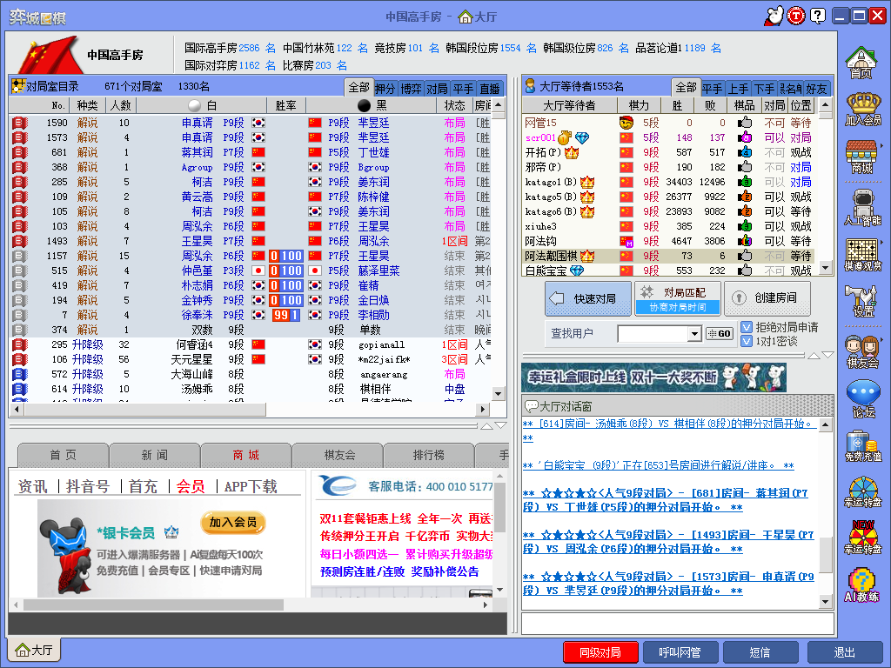

围棋App哪家强？
□ 银杏围棋原创 2022-11-12
围棋既是一种竞技游戏，也是一种艺术。很多人在学习的过程中都感受到入门很简单，会数气，会打劫，就算会下围棋了。但要精通，真的是太难了。
遥想当年不发达的时代，别说下盘棋，要找个棋谱都要过好多天才能在报纸或者杂志上看到。在科技水平日新月异的今天，我们想要找棋谱，已经有很多种选择了。在学习围棋的过程中，也有很多相关的App，为我们提高水平助力。
围棋相关的App很多，但到底哪些还是最好的呢？本文以亲身经历为主，为大家揭晓答案。
1. 101围棋网
推荐程度：★★★★★
101围棋网自他办以来便迅速圈粉，收割了大量用户，包括大多数培训机构、各种水平的棋手。如果101围棋网的题量称第二的话，还没有哪一家敢称第一。101围棋网上的题目截止目前已经有几十万道了，而且还在上升。
以下摘自101围棋网：
101围棋创立于2012年3月，最开始是希望能够随时随地找到一些适合自己当前水平的题目，因此开始收集题目，逐渐构筑起我们的题库。101题库基于一种开放和分享的理念，整理工作采用了完全开放的形式，所有棋友都能提交题目/答案。在题库成形的过程中，大量棋友付出了他们的心血，101深表感激，并希望今后依然能够集合众人之力，不断完善题库，造福更多棋友。基于101题库最主要的功能是作业系统，能够有效帮助棋友找到适合自己的死活题目。题目做对比较多，棋友的级别上升也很快，反之，如果做错较多，棋友的级别也会下降。同时，开发了面向班级的作业系统，方便老师给学生布置作业，能够即时看到学生的完成情况，给出学生做题的详细统计情况，每月每周都给出学生的统计报告。101从题库系统起步，并不断扩充，包含了对弈系统，比赛系统，棋谱系统等等，涵盖了围棋教育的方方面面。101一开始就是基于浏览器进行开发，用户不用下载任何软件，只要有浏览器就能使用，同时深度嵌入微信中，使用微信就能方便使用101的绝大部分功能，后期会创建许多小程序，进一步促进老师和家长/学生的交流。十年来，101围棋已经成长成为一个在棋友中认知度很高，并且深受大家喜爱的围棋平台。101非常感谢各位棋友的支持，并愿意与各位棋友一道，共同将101办成一个更加开放、注重分享的围棋平台。

划重点：围棋说到底是计算力的比拼，简单来说101上有成千上万的题目，包括吃子题，手筋题，死活题等等。想要提高计算力，101围棋网是您不二的选择。
101公众号的二维码如下：
2. 弈客少儿围棋
推荐程度：★★★★★
弈客少儿围棋是本人强烈推荐的平台。弈客少儿围棋是弈客围棋的另外一个非常受欢迎的产品，尤其是在疫情期间，线下停摆的时候。弈客少儿围棋不仅能上网课，还有大量的小朋友在上面训练。在弈客少儿围棋上，很容易匹配到棋力相当的对手。
以下摘自官方网站：
弈客少儿围棋平台2018年5月诞生与上海，是由弈客围棋花费3年时间自主研发，运用弈客在 AI 运用技术上的优势、独一无二的强大题库体系打造的一款更自主、更便捷、更高效的围棋产品。在基础的平台功能之外，具有独特的知识地图体系，为围棋教学提供结构化助力，同时利用独立开发的AI 技术优势，AI 对弈、 AI 分析、AI 复盘、AI出题等功能，为围棋机构提供更加精准的棋局分析和数据分析报表，帮助老师、家长实时了解孩子学习情况和状态，再也不用为不懂围棋而烦恼，更解决了孩子难寻水平相当的对手的烦恼，帮助孩子迅速提高，为传统培训机构教育模式线上化、构建智能化教室出力。
划重点：墙裂推荐的App，特别是初学者和网课老师、学生。想下棋的话上面很容易匹配到水平相当的对手。还有强大的语音、视频网课功能以及海量的题库。
3. 弈客围棋
推荐程度：★★★★★
弈客围棋是我一开始就接触的App，三大联合创始人沈尧、李刚和傅奇轩都是本人的好友。弈客围棋已经超出了下棋的范畴，更多的还有社交功能。弈客围棋的实名认证也是本人比较喜欢的一点。现在，弈客围棋的版图越来越大，推出了包括联棋、非即时对弈，甚至五子棋的功能。用户也越来越广泛。而且，弈客围棋的段位是出了名的硬，不信你可以试试。
以下是弈客围棋的官方介绍：
弈客围棋电脑版是一款基于围棋社交理念的全新软件。在弈客上，可以与棋友畅快地享受非即时对弈的乐趣，利用“弈客”可以实现个人棋谱库的管理，分享，同时弈客支持SGF导出。在弈客上棋友可以获取最新的围棋相关资讯，海量棋谱和题库。“弈客”提供科学的等级分体系。棋友之间可以自主创建比赛，组织报名，进行智能赛事编排，成绩确认，展示等功能。
划重点：也是墙裂推荐的App，特别是非即时对弈功能和联棋功能。平时工作比较忙的同学，可以利用零碎时间跟对手下一盘，可以是1天，10天，1个月甚至更长。
4. 腾讯/野狐围棋
推荐程度：★★★★
很多人对腾讯围棋和野狐围棋傻傻分不清，实际上都是腾讯公司出的。只不过电脑端叫野狐围棋，移动端叫腾讯围棋。
以下内容摘自官网：
腾讯围棋（野狐）是腾讯精心打造的专业围棋对弈、社交软件。
水墨国画风，极致的对弈与直播观战体验，实时的对弈分享。柯洁、古力、朴廷桓等世界冠军切磋对决，腾讯自研AI绝艺随时应战；绝艺精解、绝艺复盘，让绝艺陪我们一起探索棋艺之道。智能裁判，极大地解决了困扰网络围棋多年的耍赖问题。
腾讯围棋还为线下棋迷提供拍照数子功能，手机一拍，即可获得棋局精确胜负结果！即使棋局未结束，也可识别出形势判断结果。
划重点：腾讯/野狐围棋可以说是现在最炙手可热的对弈平台了。最底层从18K到世界冠军，甚至更强的AI围棋（绝艺、KataGo等），涵盖了几乎所有水平。
推荐程度：★★★
5. 弈城围棋
弈城围棋是老牌对弈平台了，近年来由于服务器老出现卡顿，已经有些没落。但普遍认为弈城的段位要比腾讯/野狐围棋的硬。
以下内容摘自百度百科：
弈城围棋网（简称：弈城），主要是报道围棋赛事相关资讯、提供围棋学习教程，含围棋新闻、弈城赛事、站内棋谱、站内热点、围棋资料、弈城江湖、弈城软件、围棋课堂、弈城论坛等栏目。

划重点：成年人首推腾讯围棋和弈城围棋，相对来说弈城围棋的段位比野狐稍稍硬一点点。
6. 猫踢狗（Multigo）
推荐程度：★★★★
猫踢狗是非常出名的打谱软件，可以说在全世界都非常流行。
Multigo为功能强大的围棋打谱软件。
全面支持 SGF 文件格式，并能读 BDX , NGF , GOS , GIB , UGF , GO 等棋谱文件，而且提供中英文两种语言。
使用MultiGo，您可以很方便地游览棋谱，查看变化图，并编辑自己的棋谱文件。强大的编辑功能使您可以任意插入变化，标记，解说等等。为了方便您网上贴图，MultiGo还可以将棋盘存为 PNG, JPG 或 BMP 图形文件。与 GNU Go 对弈，录制视频解说功能可带来更多乐趣。
MultiGo 最新版本（4.4.4）是免费资源。
划重点：打谱软件的话仅此一家，别无分店啦。
结语：所有推荐我做成了一张表格，按需索取啦。初学小孩不建议用腾讯/野狐围棋，如果被虐得太惨容易丧失信心。
| 学棋对象 |
阶段 |
App/网站 |
|---|---|---|
| 少儿 |
初学 | 弈客少儿、101围棋 |
| 进阶 | 弈客少儿、101围棋 |
|
| 高手 | 腾讯/野狐、弈客围棋、弈城、101围棋 |
|
| 成人 | 初学、进阶、高手 | 101围棋、腾讯/野狐、弈客围棋、弈城、Multigo |